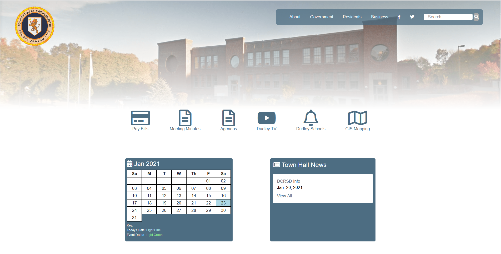
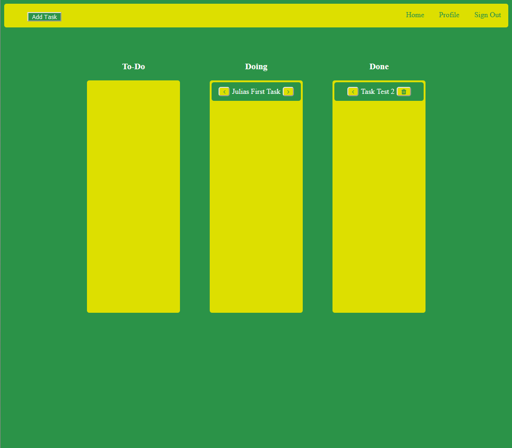

Carlos Sousa
I'm a computer science student at Bridgewater State University. I am interested in software development, computer architecture and web development.
I'm a computer science student at Bridgewater State University. I am interested in software development, computer architecture and web development.
This is a dynamic web application developed for the Town of Dudley in HTML5, CSS3, JavaScript, jQuery, Python and Django. This web application was designed with features that solved common issues with the town's current website. This application allows the respective local government offices to post news, events and documents to their departments web pages. This application is served by Heroku and uses other 3rd party technology such as AWS S3 and Cloudflare for storage and security. The website can be found here, if you are a recruiter looking to review the source code please contact me.
This is a budgeting application using Java, Java Swing and SQL built for my introduction to database management class. This application allows you to add pay periods, payments to those pay periods, search for specific pay periods and payments during that pay period, and delete any pay periods or payments. More info can be found on GitHub here.
This is a Task Board web application developed using HTML5, CSS3, JS, Python, and Django. This application was developed to enhance our knowledge on software engineering topics and to demonstrate how these concepts are used in the industry. I was in charge of the back end of the web application but helped a good amount on the front end as well. More info can be found on GitHub here.
